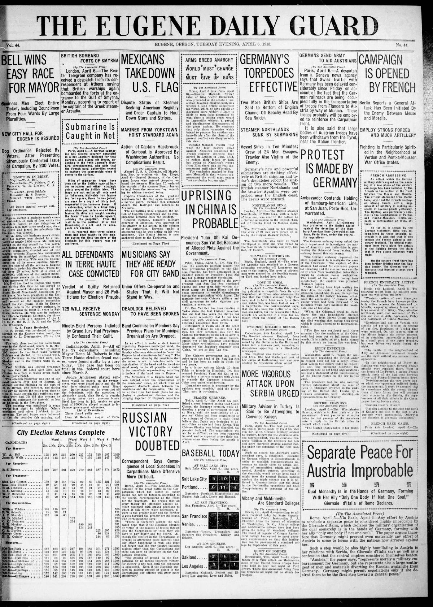
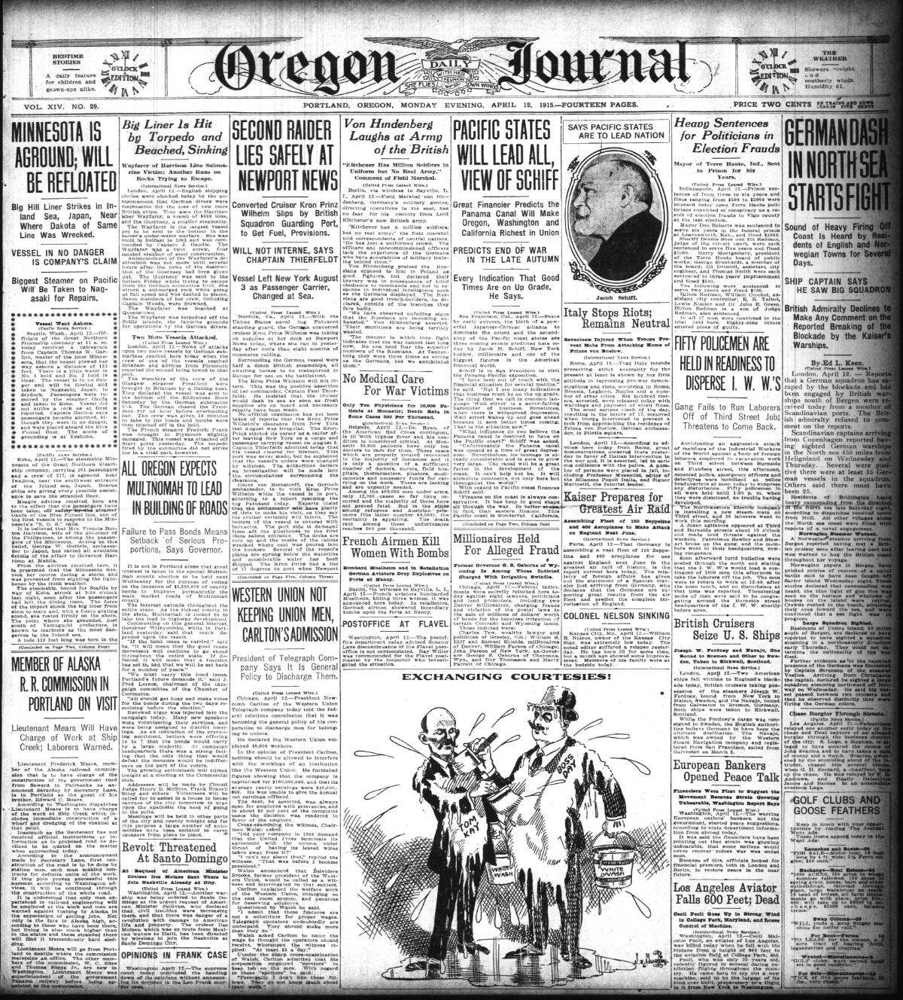

HN HN-395 · April 14, 1915 · Crime, Law & Justice > Trials, Convictions & Acquittals > Criminal trials
Source: Jasper County Democrat, p. 2 — original page; 1914 charging-stage report HN-388.
Report: After a contested political trial, the paper discussed a guilty verdict against Donn M. Roberts and associated election operatives, including evidence from witnesses and defendants who had admitted fraudulent conduct. Its commentary strongly denounced the defendants and the town's political machinery.
Assessment: This is a verdict-stage story, materially different from the 1914 indictments. The paper's hostility is editorial, so it cannot establish the guilt of anyone outside the actual verdict or give the sentence or appeals for each individual. Official judgments remain the proper source for count-by-count dispositions.
Identity-review candidate peers: HN-388:Algorithmic
Authentic scans retrieved from Historic Oregon Newspapers (University of Oregon). Article crops are located using the archive's own ALTO OCR word coordinates and rendered at native crop resolution; page scans are 1,200-pixel-wide renditions. No images were generated, mocked, or retouched.


Not yet acquired. Queued for provider-specific acquisition testing (see source-acquisition manifest).
URL (preserved verbatim): https://newspapers.library.in.gov/?a=d&d=JCDC19150414.2.19
Saved research report: Historical_Newspaper_Event_Research_378-402_2026-10-23.md
Evidence note: A newspaper report means a historical publication made a claim; it does not establish that claim as fact. Contemporary reporting is separated from later scholarly context and our own assessment.